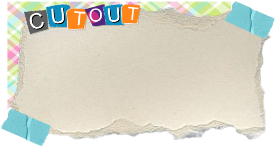

A animação é feita através de "bonecos" limitada ao 2D, toda a estrutura do personagem é montada como um esqueleto, esse boneco é então posado para a criação dos frames da animação. Dessa forma não é necessário o desenho de todas as poses, mas sim o reposicionamento do personagem.